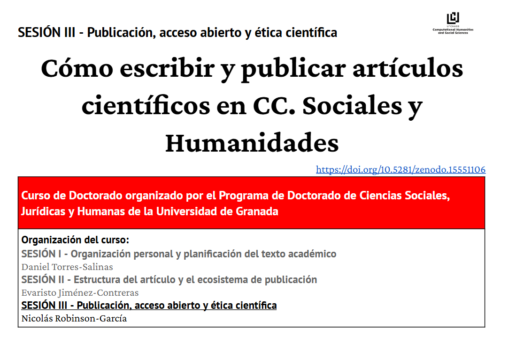

Materials on scientific publishing and OA
Last Tuesday I taught the 3rd session of the course ‘Cómo escribir y publicar artículos científicos en Ciencias Sociales y Humanidades’. This is a course I have taught for several years along with my colleagues Daniel Torres-Salinas and Evaristo Jiménez-Contreras. We normally end up switching sessions based on availability and tend to change contents on the fly, but this time we went for organization and method, and Dani created a nice layout which followed a sensible workflow (you can have a look at it at the end of the post, all in Spanish).
I was in charge of Session III and I took the baton and decided to also be methodic, and developed the following materials. I hope someone finds them useful!

SESIÓN I - Organización personal y planificación del texto académico
Tiempo, espacio y foco
1.1. Elección del momento óptimo para escribir
1.2. Configuración de un espacio personal sin distracciones
1.3. Técnicas de concentración y trabajo profundoNotas, método Zettelkasten y Zotero
2.1. Importancia de la lectura activa en la escritura académica
2.2. Aplicación del método Zettelkasten para organizar ideas
2.3. Uso de Zotero como herramienta de gestión de notasEstructura y planificación textual
3.1. Organización del contenido en un texto académico
3.2. Diseño previo del guion y los párrafos del texto
3.3. Empleo de plantillas para estructurar la escritura
SESIÓN II - Estructura del artículo y el ecosistema de publicación
Exigencias institucionales: agencias y programas
El artículo científico
2.1. Qué es un artículo científico
2.2. Tipologías de resultados
2.3. Estructura IMRyD: Introducción, Metodología, Resultados, Discusión y Conclusiones
2.4. Elementos adicionales: título, resumen, palabras clave, filiaciones
2.5. Tablas, gráficos, figuras y datos complementarios
2.6. Bibliografía y normas editoriales
2.7. Financiación y agradecimientosRevistas científicas e impacto
3.1. Qué es una revista de impacto
3.2. Historia y cálculo del factor de impacto
3.3. Estrategias ante el rechazo editorial
3.4. Bases de datos e indicadores: SCOPUS, Dialnet Métricas, CIRC
3.5. Publicación en monografíasAutoría y colaboración
4.1. Normas ICMJE y definición de autoría
4.2. Taxonomía CRediT
4.3. Malas prácticas de autoría
SESIÓN III - Publicación, acceso abierto y ética científica
Selección de revistas y preparación del manuscrito
1.1. Selección adecuada de la revista
1.2. Carta de remisiónGestión de datos y reproducibilidad
2.1. Reproducibilidad y data sharing
2.2. RepositoriosEnvío y evaluación del manuscrito
3.1. Revisión por pares y tipos de evaluación
3.2. Herramientas del proceso editorial
3.3. Decisiones editoriales y respuesta a revisoresAcceso Abierto
4.1. Tipos de Acceso Abierto
4.2. Revistas en acceso abierto
4.3. Revistas depredadorasÉtica de la publicación científica
5.1. Malas prácticas y prevenciónDivulgación científica y visibilidad del artículo publicado
6.1. Difusión en redes académicas y científicas
6.2. Perfil digital de investigador (ORCID, Google Scholar, etc.)
6.3. Métricas alternativas (altmetrics)Consejos finales para publicar con éxito